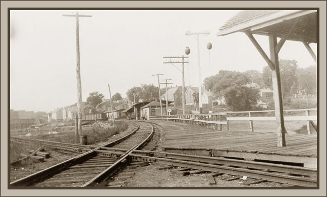
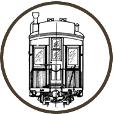
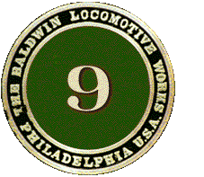
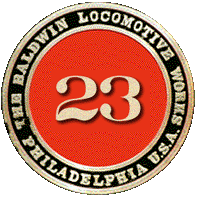

Scot's
On2 projects.

| Update to my On2 Projects page! August 2011. I started working on On2 projects in 2006, beginning with the On2 Bachmann coach bash. 5 years later, I have decided to put all On2 modeling on indefinate hold.. There is a finite amount of modeling time, and modeling money, to go around, and I have decided to only work on my large scale "G gauge" projects, and garden railroad, for now. Right now, I can only do "one scale at a time"! ;) So I packed away all my On2 trains, put it all in a large box, and will store it all until I someday have the time, money, and space to begin working in On2 again..im thinking maybe 20 years or so! ;) when I retire.. "thank you" to all the great On2 modelers I have met over the years! I will still be checking into the maine 2-footers modeling forum occasionally, and I will never lose my love for the Maine 2-foot railroads! I plan to continue some Maine 2-footer modeling in "large scale"..my 29n2 scale, and 7/8n2 scale..but for now, no On2..but I will be back! someday... thanks, Scot |
| 
On2
coach from two On30 coaches.
On2
SR&RL #9 from Bachmann Forney.

On2
SR&RL No. 23 from a Bachmann 2-8-0
More modeling projects.
Some prototype pages:
The "big" diesels of the modern New England 2-footers. A
tour of Phillips and Wiscasset in 2005.
Scot
Lawrence.
|